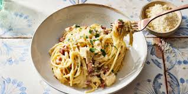

Odin Recipes
Chicken Carbonara Pasta Bake

Description
Recipe developer Barrett Heald says she wants to eat this “comforting and delicious” chicken carbonara pasta bake “every night.” How’s that for an endorsement?
Chicken Carbonara Pasta Bake ingredient
- Pancetta
- Spaghetti
- Egg yolks
- Parmesan
- Heavy cream
- Chicken
- Parsley
How to cook Chicken Carbonara Pasta Bake
- Heat a skillet over medium heat
- Add one tablespoon of oil and the chicken breast
- Cook for about 16 minutes, flipping halfway, until an instant read thermometer registers 170 degrees F
How to make Chicken Carbonara Pasta Bake
- Cook the pancetta until lightly browned and crisp, then set aside
- Boil spaghetti, reserve two cups of pasta water, and set aside
- Whisk the eggs in a bowl, then whisk in 1,5 cups of the hot pasta water
- Whisk in the cheese and cream
- Add the pasta, pancetta, and chicken to the sauce and toss
- Transfer the mixture to a prepared baking dish and bake until the sauce is thickened
- Stir and let stand so the sauce can continue to the chicken. Add more pasta water if you like
- Garnish with parsley and parmesan cheese